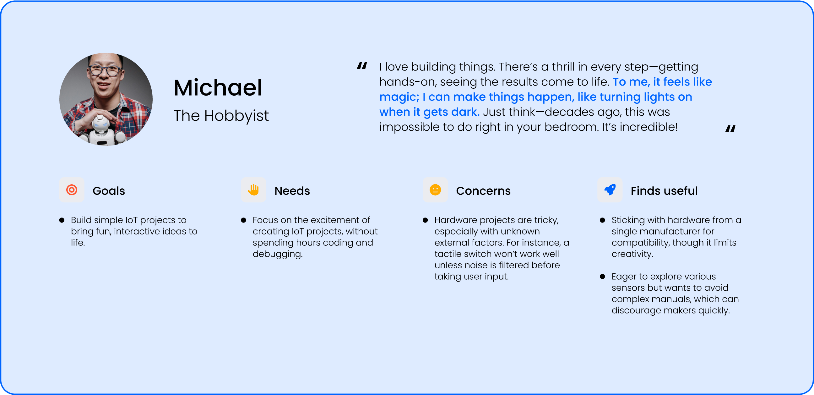
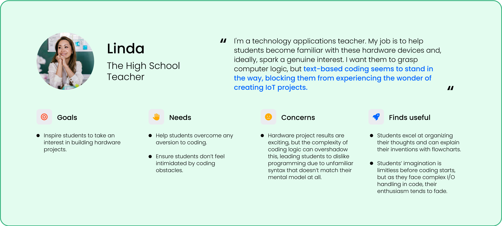
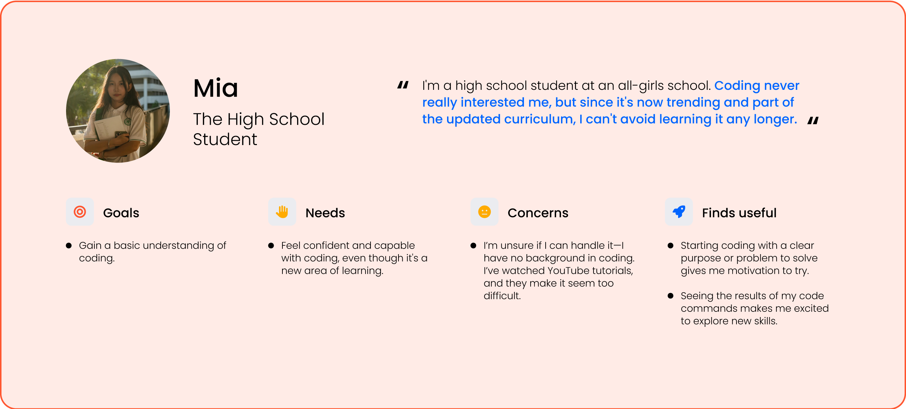
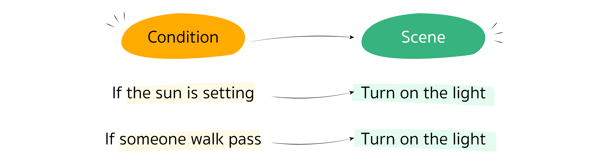

Role:
UX Designer
Timeline:
2017
End-to-End Platform for IoT project development. Get source code and circuit connection diagram for many development boards and connect to the IoT cloud platform easily with Maker Playground AI-based code and circuit Generator
About this case study
Creating hardware projects can be far more challenging than software projects. Why? Each device has its own development protocol—some simpler, some more complex—which means that most makers spend a lot of time studying manuals just to get different boards to communicate, delaying the real goal of bringing their projects to life.
Recognizing this issue firsthand, my team and I developed MakerPlayground to help makers boost their productivity and collaborate seamlessly. With visual diagram-based programming instead of traditional code, MakerPlayground simplifies hardware development, making it easier for makers to focus on what really matters.
What I've done
User Research
- I conducted interviews with makers and art installers who are creating interactive art projects to comprehend their requirements.
- I have organized workshops for individuals interested in building IoT projects.
- I scrutinized the workshop participants to discern their usage patterns and pinpoint the difficulties they encountered while creating IoT projects.
Web App Design
- I created the MakerPlayground interface by analyzing user behavior insights from my observations.
- I created the design system and upheld the consistent branding and visual identity of MakerPlayground.
UI Finalization for MakerPlayground
- I coded the front-end using JavaFX to ensure smooth and efficient user interactions.
- Verified UI accuracy and functionality, ensuring a polished final product.
Challenge
The most challenging aspect is keeping the incomprehensible as simple as possible while complying to coding guidelines.
User Interview
  Findings & Insight
one of the factors that made hardware projects tough. It's a programming style that doesn't fully fit the mental model of persons working on project hardware.
According to the findings of the research, hardware programming should be event-based rather than line-based. So we decided to do it in block diagram format because it is more in line with people's understanding.
Concept & Design
Result & Design
"If someone walk pass, turn on the light."
Step 1
Add the condition block and scene.
Step 2
Choose sensor for condition block and set value for it.
*This step require basic knowledge. You have to know sensor’s function
Step 3
Choose output device for scene block and set value for it.
*This step require basic knowledge. You have to know sensor’s function

Step 4
Bind them together.
Step 5
Bind them together. Choose the suitable devices for your project. The hardest part will be handled by software. It will guide you through the wiring process and recommend which sockets to use.